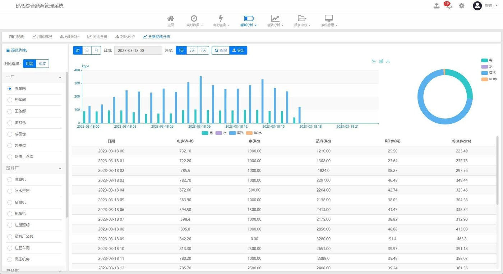

先看架构是否完整
能源管理系统通常由采集层、数据接口、业务层、接口层与交互层构成。采集层负责接入电表、水表、蒸汽表、流量计与重点设备；数据接口提供数据库、OPC、TCP等方式；业务层完成能耗统计与能效、单耗计算；接口层对接ERP/SAP、DCS等系统；交互层提供看板、报表与告警。
架构完整意味着系统不仅能展示数据，还能完成计算与对接，避免后续陷入"看得见但算不出"的困境。

功能配置看四点
一是分项计量是否支持按全厂、车间、产线层级展开；二是报表能否按周期自动生成，减少人工统计；三是异常告警是否可配置阈值并定位到设备；四是单耗计算能否按不同产品与工序设置口径。
接口条件要提前确认
选型阶段需要明确现有系统类型与可用接口。若企业已使用ERP/SAP或DCS，应确认系统是否支持相应协议，以及数据字段能否对应。东莞某半导体公司实现了能源计量与SAP产量数据对接，某不锈钢有限公司则对接DCS与ERP数据计算产品单耗。

实施能力同样重要
系统上线涉及表计安装、通讯调试与口径配置。选择具备工程咨询、设计、施工、调试与运维能力的团队，有助于减少多环节衔接带来的问题。
系统功能细节见能源管理系统；如需评估选型方案，可提供服务电话0769-22996692或通过微信扫码交流。